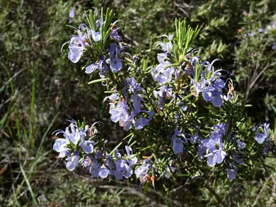

pranet · 出典付きの植物図鑑
ローズマリー
Salvia rosmarinus Spenn. · Lamiaceae

ローズマリー は、地中海沿岸地方原産で、シソ科に属する常緑性低木。和名マンネンロウの漢字表記は「迷迭香」であるが、これは中国語表記と同一である。小さく細長い葉に、甘く爽やかな芳香があるのが特徴。生葉もしくは乾燥葉を香辛料、薬（ハーブ）として用いる。肉料理との相性がよく、香りづけや臭み消しに使われる。花も可食。水蒸気蒸留法で抽出した精油も、薬として利用される。
出典: Wikipedia 日本語版「ローズマリー」 · CC BY-SA 4.0
異名: Rosmarinus angustifolius Mill., Rosmarinus communis Noronha, Rosmarinus flexuosus Jord. & Fourr., Rosmarinus latifolius Mill., Rosmarinus laxiflorus de Noé, Rosmarinus ligusticus Gand., Rosmarinus officinalis L., Rosmarinus palaui (O.Bolòs & Molin.) Rivas Mart. & M.J.Costa, Rosmarinus prostratus H.J.Veitch, Rosmarinus prostratus Mazziari, Rosmarinus rigidus Jord. & Fourr., Rosmarinus serotinus Loscos, Rosmarinus tenuifolius Jord. & Fourr., Salvia fasciculata Fernald
同定や利用は自己責任でお願いします。この図鑑だけを根拠に野生の植物を食べないでください。
出典
- 学名: World Flora Online Plant List 2026-06 · CC0 1.0
- 名前: Wikipedia の記事名と Wikidata · CC0 1.0（Wikidata）。記事名は事実
- 説明: Wikipedia 日本語版「ローズマリー」 · CC BY-SA 4.0
- 食用・毒性: World Checklist of Useful Plant Species (Diazgranados et al. 2020, RBG Kew) · CC BY 4.0
- 分布: World Checklist of Vascular Plants (WCVP), RBG Kew, version 2026-06-04 · CC BY 3.0
このページは pranet のデータから自動生成しています。コードは MIT、データは項目ごとのライセンス（説明）。